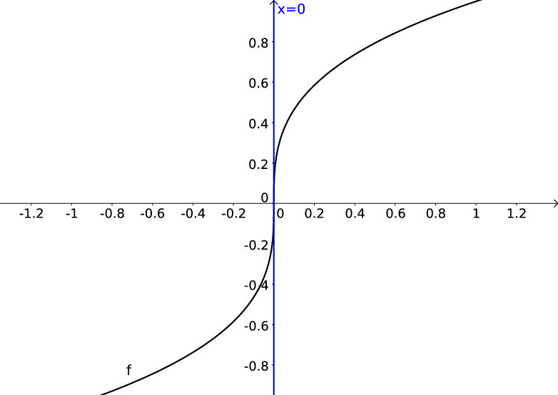
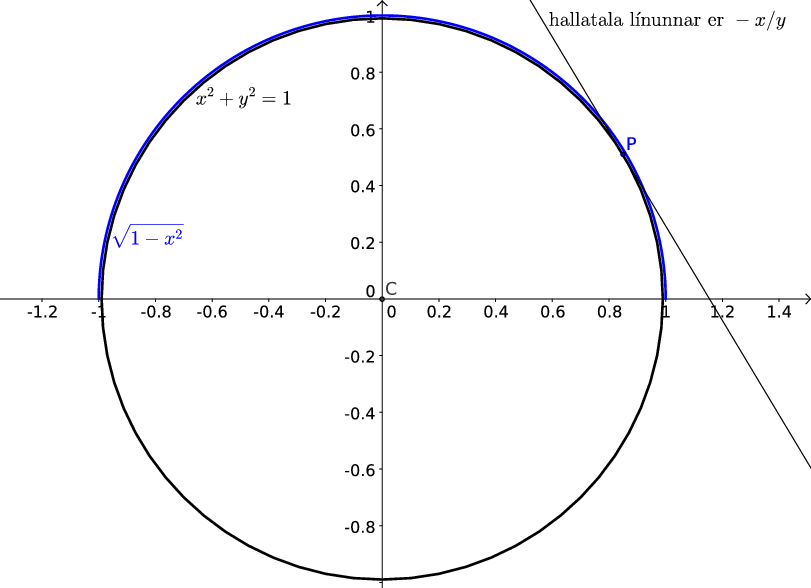

3. Afleiður
Nauðsynleg undirstaða
The Quest stands upon the edge of a knife. Stray but a little, and it will fail, to the ruin of all. Yet hope remains while the Company is true.
– Galadriel, The Fellowship of the Ring
3.1. Skilgreining á afleiðu
Skilgreining
Látum \(a\) vera innri punkt skilgreiningarmengis falls \(f\).
Afleiða falls
en: derivative
Smelltu fyrir ítarlegri þýðingu.
Ef markgildið er til þá er sagt að fallið \(f\) sé
diffranlegt
en: differentiable
Smelltu fyrir ítarlegri þýðingu.
3.1.1. Dæmi: afleiða
Dæmi
Fallið \(f(x) = x^2\) er diffranlegt í sérhverjum punkti \(a\). Það sést af því að
3.1.2. Setning: Diffranleiki í punkti
Setning
Ef fall \(f\) er diffranlegt í punkti \(c\) þá er \(f\) samfellt í punktinum \(c\).
Aðvörun
Fall getur verið samfellt í punkti \(c\) án þess að það sé diffranlegt í \(c\).
3.1.3. Dæmi: Diffranleiki í punkti
Dæmi
Fallið \(f(x) = |x|\) er samfellt. En það er ekki diffranlegt í punktinum \(x=0\). Það sést af því að
en
Þannig að markgildið \(\lim_{h\to 0} \frac{f(0+h)-f(0)}{h}\) er ekki til og því er fallið ekki diffranlegt í \(x=0\).
3.1.4. Snertill
Afleiðu falls \(f\) í punktinum \(a\) fæst með því að taka sniðil (e. secant) í gegnum punktana \((a,f(a))\) og \((a+h,f(a+h))\), og láta svo \(h\) stefna á \(0\).
Þetta gefur hallatölu
snertilsins
en: tangent line, tangent vector
Smelltu fyrir ítarlegri þýðingu.
Jafna snertils við graf fallsins í punktingum \(a\) er línan
3.1.5. Athugasemd: Hallatalan \(\infty\) er ekki leyfð
Athugasemd
Við leyfum ekki \(f'(a) = \infty\) eða \(f'(a) = -\infty\). Samanber \(f(x) = x^{\frac 13}\) í \(a=0\),
Hér ætti því jafna snertilsins að vera \(x=0\).
{kind=link}

Við viljum að snertillinn sé nálgun við graf fallsins fyrir \(x\) nálægt \(a\), lóðrétt lína er gagnslaus nálgun því hún er ekki skilgreind sem fall af \(x\).
3.2. Afleiða sem fall
3.2.1. Útvíkkun fyrir lokuð bil
Ef fallið \(f\) er skilgreint á lokuðu bili þá getum við skilgreint afleiðuna í endapunktunum með því að taka markgildi frá hægri/vinstri eftir því sem við á.
3.2.2. Skilgreining: Hægri/vinstri afleiða
Skilgreining
Hægri afleiða falls \(f\) í punkti \(x\) er skilgreind sem
\[f_+'(x)=\lim_{h\rightarrow 0^+}\frac{f(x+h)-f(x)}{h}.\]Vinstri afleiða falls \(f\) í punkti \(x\) er skilgreind sem
\[f_-'(x)=\lim_{h\rightarrow 0^-}\frac{f(x+h)-f(x)}{h}.\]
3.2.3. Setning
Setning
Ef \(x\) er innri punktur í skilgreiningarmengi fallsins \(f\) þá er \(f\) diffranlegt í \(x\) þá og því aðeins að
og þá er \(f'(x)\) jafnt og markgildin hér fyrir ofan.
Athugasemd
Hægt er að túlka afleiðu falls sem fall í sínum eigin rétti. Lauslega er þá talað um að fallið \(f(x)\) sé diffranlegt ef til er fall \(f'(x)\) þar sem það að skipta út breytunni \(x\) fyrir einhvern innripunkt \(a\) í skilgreiningarmengi \(f\) gefur afleiðuna í punktinu \(a\). Til þess að skilgreiningin haldi vatni endanlega þarf svo að leyfa hægri/vinstri afleiður í jaðarpunktum skilgreiningarmengisins.
3.2.4. Skilgreining: Diffranlegt fall
Skilgreining
Látum \(f\) vera fall með skilgreiningarmengi \(A\). Gerum ráð fyrir að \(A\) sé sammengi endanlega margra bila. Við segjum að fallið \(f\) sé diffranlegt ef það er diffranlegt í öllum innri punktum \(A\) og diffranlegt frá vinstri/hægri í jaðarpunktum \(A\) eftir því sem við á.
3.2.5. Ritháttur
Afleiða falls \(f\) er ýmist táknuð með
Ef við skrifum \(y=f(x)\) þá má einnig tákna hana með
Aðvörun
Enn og aftur er túlkun bókarinnar á hugtakinu diffranlegt fall örlítið lausari í reipunum en sú sem er notuð hérna. Hún virkar ágætlega fyrir afleiður í öllum innri punktum skilgreiningarmengisins en athugar ekki hvað gerist í jaðarpunktum þess.
3.2.6. Dæmi: Afleiða
Dæmi
Skoðum afleiðu fallsins
í vinstri endapunkti skilgreiningarmengisins.
Lausn
Fallið \(f(x) = \sqrt{x}\), \(f:[0,\infty[\to {{\mathbb R}}\) er diffranlegt á menginu \(]0,\infty[\) og afleiðan er gefin með \(f'(x) = \frac 1{2\sqrt{x}} = \frac 12 x^{-1/2}\) þar. Hins vegar er \(f\) ekki diffranlegt í \(x=0\) þrátt fyrir að fallgildið sé vel skilgreint (og fallið samfellt frá hægri) þar.
Ef \(x>0\) þá fæst
sem segir okkur að \(f'(x) = \frac 12 x^{-1/2}\).
Í vinstri endapunkti skilgreingarsvæðisins, \(x=0\), þá fæst hins vegar
sem sýnir að fallið er ekki diffranlegt frá hægri í \(x=0\).
3.2.7. Skilgreining: Hærri afleiður
Skilgreining
Látum \(f\) vera fall. Afleiðan \(f'\) er fall sem skilgreint er í öllum punktum þar sem \(f\) er diffranlegt.
Ef fallið \(f'\) er diffranlegt í punkti \(x\) þá er afleiða \(f'\) í punktinum \(x\) táknuð með \(f''(x)\) og kölluð önnur afleiða (e. second derivative) \(f\) í punktinum \(x\). Líta má á aðra afleiðu \(f\) sem fall \(f''\) sem er skilgreint í öllum punktum þar sem \(f'\) er diffranlegt.
Almennt má skilgreina \(n\)-tu afleiðu \(f\), táknaða með \(f^{(n)}\), þannig að í þeim punktum \(x\) þar sem fallið \(f^{(n-1)}\) er diffranlegt þá er \(f^{(n)}(x)=\frac{d}{dx}f^{(n-1)}(x)\).
3.2.8. Dæmi: Hærri afleiður
Dæmi
Finnum fyrstu og aðra afleiðu fallsins \(f(x)=3x^2\).
Lausn
Ef \(f(x) = 3x^2\), þá er
og
3.2.9. Ritháttur
Ritum \(y=f(x)\).
Þá má tákna fyrstu afleiðu \(f\) með
aðra afleiðuna með
og almennt \(n\)-tu afleiðuna
Athugasemd
Venja er að rita \(f'''\) til að tákna þriðju afleiðu \(f\) en afar sjaldgæft að \(f''''\) sé notað til að tákna fjórðu afleiðu \(f\) og mun algengara að nota \(f^{(4)}\).
3.3. Reiknireglur
3.3.1. Reiknireglur: Diffranleg föll
Reiknireglur: Diffranleg föll
Látum \(f\) og \(g\) vera föll sem eru diffranleg í punkti \(x\). Þá eru föllin \(f+g,\ f-g, kf\) (þar sem \(k\) er fasti) og \(fg\) diffranleg í punktinum \(x\), og ef \(g(x)\neq 0\) þá eru föllin \(1/g\) og \(f/g\) líka diffranleg í \(x\).
Eftirfarandi formúlur gilda um afleiður fallanna sem talin eru upp hér að framan:
\(\frac{d}{dx} c=0, c \in \mathbb{R}\)
\(\frac{d}{dx} x^n = nx^{n-1}, n \in \mathbb{Z}\)
\((f+g)'(x)=f'(x)+g'(x)\)
\((f-g)'(x)=f'(x)-g'(x)\)
\((kf)'(x)=kf'(x)\), þar sem \(k\) er fasti
\((fg)'(x)=f'(x)g(x)+f(x)g'(x)\)
\(\left(\frac{1}{g}\right)'(x)=\frac{-g'(x)}{g(x)^2}\), ef \(g(x)\neq 0\)
\(\left(\frac{f}{g}\right)'(x)= \frac{f'(x)g(x)-f(x)g'(x)}{g(x)^2}\), ef \(g(x)\neq 0\)
3.3.2. Dæmi: Nokkrar afleiður
Dæmi
\(\frac{d}{dx} 1 = \lim_{h\to 0} \frac{1-1}h = 0\)
\(\frac{d}{dx} x = \lim_{h\to 0} \frac{x+h-x}h = 1\)
\(\frac{d}{dx} x^2 = \lim_{h\to 0} \frac{x^2+2xh+h^2-x^2}h = \lim_{h\to 0} \frac{2xh + h^2}h = \lim_{h\to 0} 2x+h= 2x\)
3.3.3. Afleiður margliða
Með því að nota setningarnar að ofan þá eigum við ekki í neinum vandræðum með að diffra margliður. Setning 3.3.1 (i) segir að við getum diffrað hvern lið fyrir sig, liður (iii) í sömu setningu segir að við getum tekið fastana fram fyrir afleiðuna og loks segir Sama setning segir hvernig við diffrum \(x^n\).
3.3.4. Dæmi: Afleiða margliðu
Dæmi
Finnum afleiðu margliðunnar \(p(x) = 4x^3-2x + 5\).
Lausn
Höfum að
3.4. Afleiður hornafallanna
3.4.1. Setning: Afleiða kósínus og sínus
Setning
Hornaföllin kósínus og sínus eiga sér eftirfarandi afleiður:
\(\frac{d}{dx} \sin(x) = \cos(x)\)
\(\frac{d}{dx} \cos(x) = -\sin(x)\)
3.4.2. Dæmi: Afleiða sínus
Dæmi
Finnum afleiðu fallsins \(f(x)=5x^3\sin(x)\).
Lausn
Við beitum margföldunarreglunni fyrir afleiður auk reglunnar hér að ofan um afleiðu sínus og fáum að
3.4.3. Setning: Afleiða tangens
Setning
Tangens á sér eftirfarandi afleiðu:
3.4.4. Dæmi: Afleiða tangens
Dæmi
Finnum afleiðu fallsins \(f(x)=\cos(x)+\tan(x)\).
Lausn
Notum setninguna um afleiðu kósínus og afleiðu tangens og fáum að og fáum að
3.5. Keðjureglan
3.5.1. Setning: Keðjureglan
Keðjureglan
Gerum ráð fyrir að \(f\) og \(g\) séu föll þannig að \(g\) er diffranlegt í \(x\) og \(f\) er diffranlegt í \(g(x)\). Þá er samskeytingin \(f\circ g\) diffranleg í \(x\) og
3.5.2. Dæmi: Keðjureglan
Dæmi
Finnum afleiðu samskeytingarinnar \(f \circ g\) ef \(f(x) = \sqrt{x}\) og \(g(x)=3x^5\).
Lausn
Skoðum föllin \(f(x) = \sqrt{x}\) og \(g(x) = 3x^5\). Bæði þessi föll eru diffranleg og afleiðurnar eru \(f'(x) = \frac 12 x^{-1/2}\) og \(g'(x) = 15x^4\). Afleiða samskeytingarinnar \(f\circ g\) er þá samkvæmt keðjureglunni
3.6. Andhverf föll
Rifjum upp að gagntæk vörpun \(f:X\to Y\) hefur andhverfu \(f^{-1}:Y\to X\) sem uppfyllir að
Sjá kafla 1.4.
Athugasemd
Látum \(f:X \to Y\) vera fall sem skilgreint er á mengi \(X\). Gerum ráð fyrir að \(f\) sé eintækt. Með því að einskorða bakmengi \(f\) við myndmengið \(\tilde Y = f(X)\) þá verður \(f:X\to \tilde Y\) gagntækt fall. Þá er til andhverfa \(f^{-1}:\tilde Y \to X\) sem uppfyllir
3.6.1. Setning
Setning
Fall sem er strangt vaxandi eða strangt minnkandi er eintækt og á sér því andhverfu.
3.6.2. Setning; Eiginleikar andhverfa
Setning
\(y=f^{-1}(x)\) þá og því aðeins að \(x=f(y)\).
Skilgreingarsvæði \(f\) er myndmengi \(f^{-1}\).
Myndmengi \(f^{-1}\) er jafnt skilgreiningarmengi \(f\).
\(f^{-1}(f(x))=x\) fyrir öll \(x\) í skilgreiningarmengi \(f\).
\(f(f^{-1}(x))=x\) fyrir öll \(x\) í skilgreiningarmengi \(f^{-1}\).
\((f^{-1})^{-1}(x)=f(x)\) fyrir öll \(x\) í skilgreiningarmengi \(f\), alltsvo \((f^{-1})^{-1}=f\).
Graf \(f^{-1}\) er speglun á grafi \(f\) um línuna \(y=x\).
3.6.3. Setning: Afleiða andhverfunnar
Setning
Gerum ráð fyrir að fall \(f\) hafi andhverfu \(f^{-1}\). Látum \(x\) vera á skilgreiningarmengi \(f\) og gerum ráð fyrir að \(f\) sé diffranlegt í punktinum \(f^{-1}(x)\) og að \(f'(f^{-1}(x)) \neq 0\). Þá er \(f^{-1}\) diffranlegt í punktinum \(x\) og
Athugasemd
Setningin segir okkur sér í lagi að láréttur snertill við \(f\) svarar til lóðrétts snertils við \(f^{-1}\).
3.7. Fólgin diffrun
Hugtakinu fólgin diffrun er e.t.v. auðveldast að lýsa með dæmi.
3.7.1. Dæmi: Fólgin diffrun
Dæmi
Jafna hrings með geisla 1 og miðju í (0,0) er \(x^2+y^2=1\). Við vitum að hægt er að skrifa efri og neðri helminga hans sem föll af \(y\), annars vegar \(y=\sqrt{1-x^2}\) og hins vegar \(y=-\sqrt{1-x^2}\). Ef við viljum finna snertil við hringinn getum við notað þessi föll. En þar sem við vitum að hægt er að skrifa \(y\) sem fall af \(x\) þá getum við einnig diffrað jöfnu hringsins beint með aðstoð keðjureglunnar,
{kind=link}

3.7.2. Setning: Andhverfusetningin
Andhverfusetningin
Látum feril vera gefinn með \(F(x,y) =0\), þar sem \(F\) er diffranlegt í bæði \(x\) og \(y\). Í punktum þar sem snertill ferilsins er ekki lóðréttur (þ.e. \(\frac{d}{dy}F \neq 0\)) þá er hægt að skrifa \(y\) sem fall af \(x\) og þá fæst af keðjureglunni að
þ.e.
3.7.3. Með öðrum orðum
Það kemur í sama stað niður að einangra \(y=f(x)\), ef það er mögulegt, og finna \(y'\) með því að diffra, eins og að diffra \(F(x,y)=0\) og einangra svo \(y'=\frac{dy}{dx}\).
3.7.4. Vinnulag
Diffrum báðar hliðar jöfnunar með tilliti til \(x\), og lítum á \(y\) sem fall af \(x\) sem við diffrum með aðstoð keðjureglunnar (og gleymum ekki \(y'\))
Einangrum \(y'\)
Skiptum \(y\) út fyrir \(f(x)\).
3.7.5. Setning: Hagnýting á fólginni diffrun
Setning
Ef \(n\) og \(m\) eru heilar tölur þá er
3.8. Afleiður logra og vísisfalla
3.8.1. Setning: Afleiður logra og vísisfalla
Setning
Eftirfarandi gildir um afleiður logra og vísisfalla:
\(\frac{d}{dx} e^x = e^x\)
\(\frac{d}{dx} e^{g(x)}=e^{g(x)}g'(x)\)
\(\frac{d}{dx} \ln(x) = \frac{1}{x}\)
\(\frac{d}{dx} \ln(g(x)) = \frac{1}{g(x)}g'(x)\)
\(\frac{d}{dx} b^x = b^x \ln(b)\)
\(\frac{d}{dx} b^{g(x)} = b^{g(x)}\ln(b)g'(x)\)
\(\frac{d}{dx} \log_b(x) = \frac{1}{x\ln(b)}\)
\(\frac{d}{dx} \log_b(g(x))=\frac{g'(x)}{g(x)\ln(b)}\)
3.8.2. Dæmi: Afleiða vísisfalls
Dæmi
Finnum fleiðu fallsins \(f(x)=3^x\).
Lausn
Samkvæmt reglu 5 hér að ofan fæst
3.8.3. Dæmi: Afleiða lografalls
Dæmi
Finnum afleiðu fallsins \(g(x)=\log_2(x^3)\).
Lausn
Samkvæmt reglu 8 hér að ofan fæst